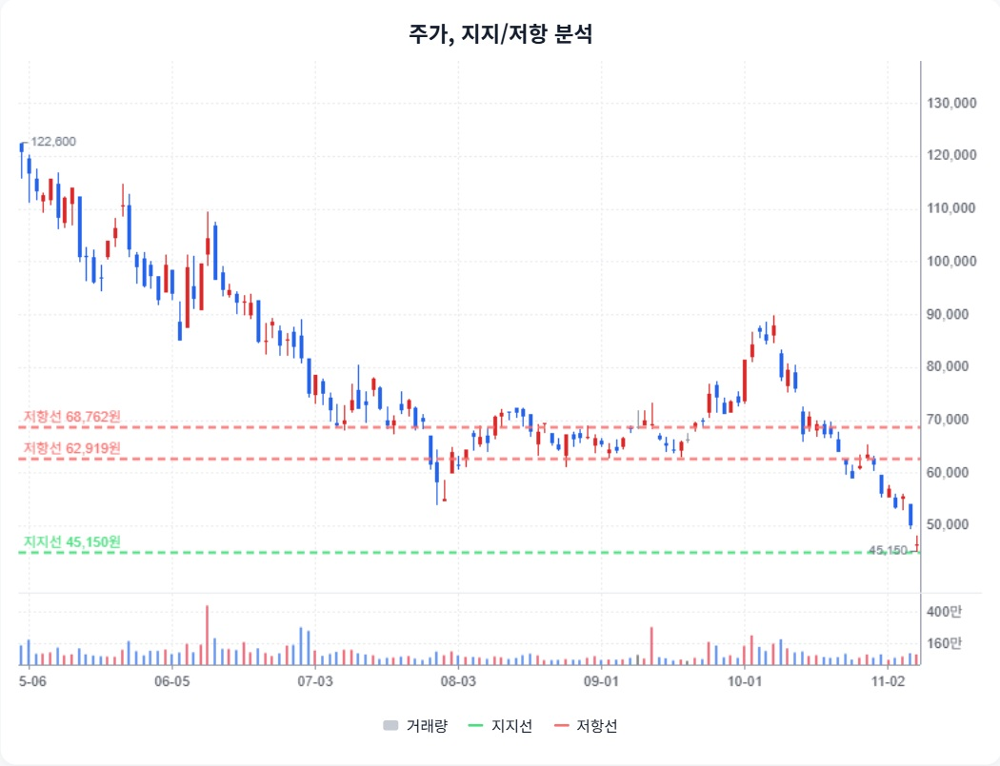

리노공업 · StockEasy 읽기용 정리
첨부 확인 2026-11-08 · 핵심 내용을 문단별로 재구성했습니다. 원문 전체 전사가 아니며, 차트는 첨부 화면에서 발췌했습니다. 원문의 매수·매도 표현과 가격 구간은 자동 매매 신호로 채택하지 않았습니다.
1. 추가 답변 재검토 · 버틸 근거와 훼손 조건
StockEasy 원문 요약 · 주장과 가정 포함
새 답변은 사업의 지속성·현금 여력·하방 시나리오를 제시했다. 설명의 구체성과 원문 확인 여부는 별개다.
2. 개발용 소켓 수요가 방어 논리인가
StockEasy 원문 요약 · 주장과 가정 포함
원문은 IC 테스트 소켓 내 R&D 매출70~75% 추정과 차세대 칩 개발 수요가 양산 수요 둔화를 일부 완충할 수 있다는 관점을 제시합니다.
3. EPS·연도·단위 맞추기
StockEasy 원문 요약 · 주장과 가정 포함
원문에는 LS2026E EPS2,357원과 메리츠2027E2,753원 등이 등장하며 생산 정상화 이후의 회복을 설명합니다.
4. 이익 유지와 평가 회복은 다릅니다
StockEasy 원문 요약 · 주장과 가정 포함
원문은 보수 EPS1,800원, PER20배 하단, 이익 유지 시30배 회복 등의 시나리오를 제시합니다.
5. 첨부 차트와 기준 종가 구분
StockEasy 원문 요약 · 주장과 가정 포함
원문은 본문 약70,800원과 기술 분석46,600원 등 다른 가격을 사용하며45,150원 지지와62,919원·68,762원 저항을 제시합니다.

StockEasy 첨부 원문 발췌 · 자료 시점/공급자가 다른 외부 차트이며 현재 시세가 아닙니다.